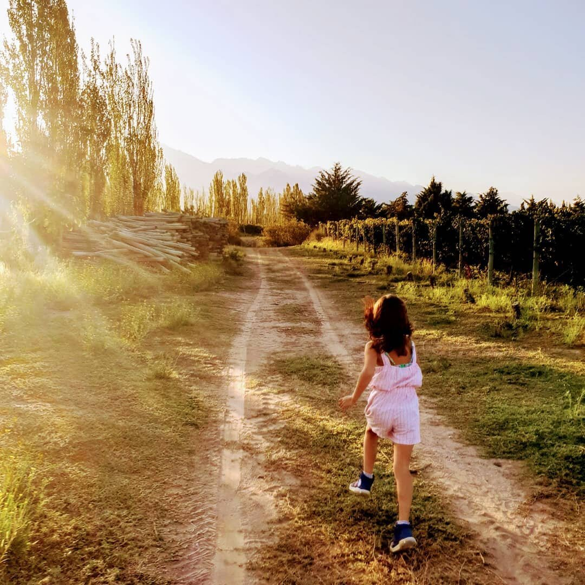

Estás atravesando una prueba que trastorna tus hábitos y te asusta. Esto es bastante normal, todo esto es brutal, sin precedentes y concierne a todo el planeta 🌍
Durante estos días, cuando tienes que quedarte en casa para protegerte y proteger a otros, te ayudaremos ofreciéndote actividades, ejercicios y dándote algunos consejos a través de está página 😉
Cualquiera que sea la dificultad y las consecuencias de esta situación, no lo olvides: ustedes están juntos, estamos juntos, y así somos más fuertes 💪
Este gran momento de pausa puede ser una oportunidad para aprender a reconocer tus emociones, también para cultivar amabilidad y un espíritu de cooperación. Así también como a aprender sobre el Yoga. Una especie de “retiro hacia nuestro interior” no siempre fácil pero quizás fructífero 🙏
No dudes en enviarnos tus ideas, sugerencias o simplemente para compartir lo que estas viviendo, para que esta comunidad sea una red de apoyo y un pequeño hilo de luz entre nosotros 🥰
Intentaremos acompañarte de la mejor manera 🙏💪
Un abrazo cariñoso,
Carmen
Fundadora de YogaKiddy y mamá de Luz 👩👦💖
#YOMEQUEDOENCASA 🏠